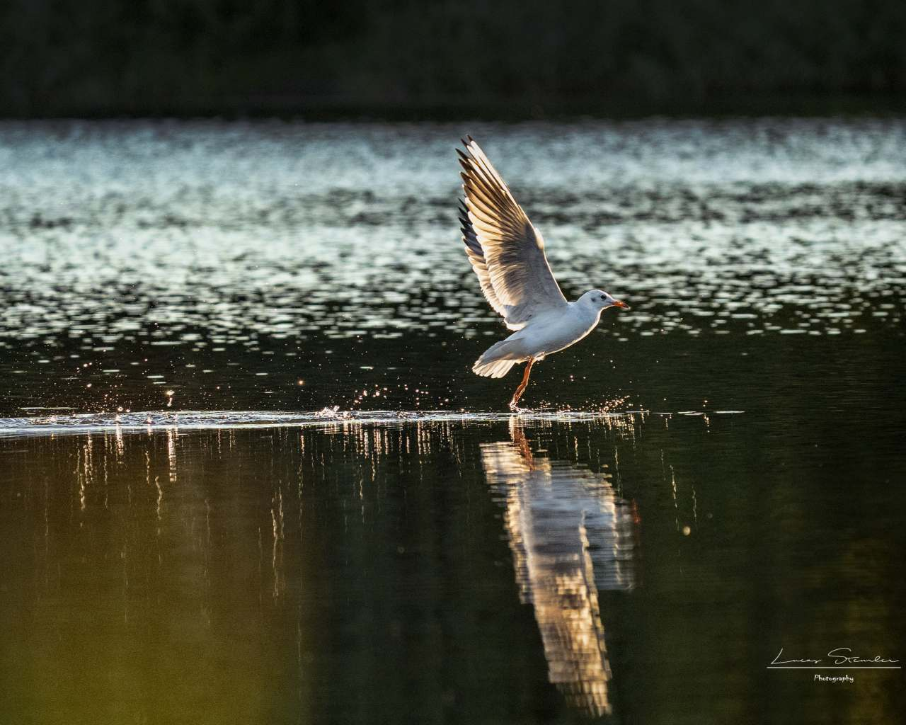

Aktualności z Szacht
Platformy lęgowe dla rybitw zyskały zadaszenie ochronne
15.04.2024r.

Jedna z 3 platform lęgowych wraz z męwą śmieszką na dachu(fot. własna).
Pod koniec marca(24) platformy lęgowe, które zostały ustawione dla rybitw rzecznych zyskały zadaszenie ochronne. Mają one na celu zapobiec lęgowi mew śmieszek, które pojawiają się na Szachtach wcześniej, niż rybitwy - tym samym zajmując im miejsce. Rybitwa rzeczna jest w Polsce gatunkiem objętym ochroną ścisłą, wymagającym ochrony czynnej.
"W zeszłym roku na jednej z platform lęgi założyło kilkanaście par śmieszek i nie dopuściły one w ogóle rybitw na platformę. Dopiero jak mewy się wyniosły, to rybitwy usiadły na niej w lipcu i założyły późne lęgi. Niestety z racji tego, że było to już w lipcu, to sukces lęgowy był umiarkowany. Wobec czego postanowiliśmy wyrównać szanse rybitwom. Tym bardziej, że śmieszkom wystarczą byle szuwary, a rybitwa potrzebuje kamienistego podłoża."
Mówi Maciej Marciniak, radny Fabianowa-Kotowa.
.jpg)
Rybitwa rzeczna (fot. Łukasz Łukasik - na licencji CCA-SA 3.0 - Wikipedia)
"Pierwsze dwie platformy finansowałą Rada Osiedla, zamówienie realizował ZZM, a OTOP((Ogólnopolskie Towarzystwo Ochrony Ptaków) służył merytorycznym wsparciem. Obie pływają po stawie Rozlanym. Trzecia platforma to działanie oddolne mieszkańców, wolontariuszy i lokalnego stowarzyszenia Fabkowo oraz grupy SternaWLKP (obrączkarze i specjaliści od rybitw) oraz OTOP. Montaż namiotów to już znowu zadanie sfinansowane przez Radę Osiedla w 2024 r. Zamówienie realizuje ZZM, a wykonuje je zespół ze SternaWLKP przy moim udziale/pomocy." - dodaje Pan Maciej.
Mają one 9m2, są zbudowane z drewna oraz wyściełane żwirem. Ogrodzenie natomiast ma za zadanie zapobiec wypadnięciu młodych. Historia pierwszej z nich sięga 2021 roku, a w poprzednim 2023 roku trzecia platforma została zwodowana na stawie Edy. Zadaszenia zostaną usunięte po 5 maja, lub w weekend 11 maja. Pierwsze rybitwy są już na Szachtach od pewnego czasu. Według przyrodników, Szachty to jedyne miejsce w Poznaniu, gdzie rybitwy zakładają gniazda.
Mewa śmieszka(fot. Łukasz Stemler).
Rybitwie rzecznej w Polsce zagraża utrata naturalnych siedlisk związanych ze zmianami reżimu hydrologicznego; zasypywania starorzeczy; zalesiania nieużytków rolnych w dolinach rzek; wzrostu ruchu turystycznego(co wpływa na sukces lęgowy); płoszenie rybitw poza okresem lęgowym przez ludzi; drapieżniki skrzydlate(kruk, wrona siwa, sroka mewa srebrzysta) i czworonożne(lis, jenot, norka amerykańska i inne łasicowate) niszczące lęgi, a także potencjalnie zanieczyszczenie wód śródlądowych pestycydami oraz metalami ciężkimi.
Po zdjęciu namiotów, ornitolodzy będą obserwować kto siada na platformie i zakłada gniazda. Potem w okolicy lipca, jeśli na platformach będą młode, SternaWLKP przeprowadzi obrączkowanie.
Osoby zaangażowane w inicjatywę to ww. radny Maciej Marciniak, SternaWLKP to przede wszystkim Maciej Gierszewski i Adam Loręcki. OTOP to Samuel Odrzykoski. Plus inni wolontariusze. Serdecznie dziękuję Panu Maciejowi Marciniakowi za udzielenie wszelkich informacji. Oby wiecej takich akcji.

{kind=link}
{kind=link}
1) Adam Loręcki i Mariusz Marciniak 2) Wodowanie platformy 3) Adam Loręcki, Mariusz Marciniak, Mariusz Gierszewski